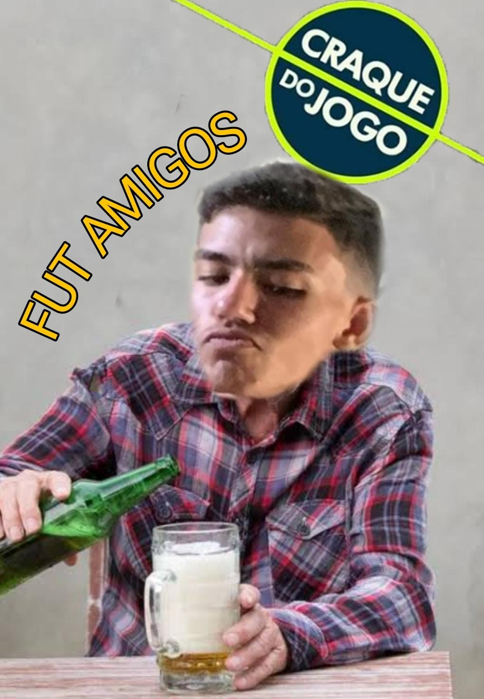
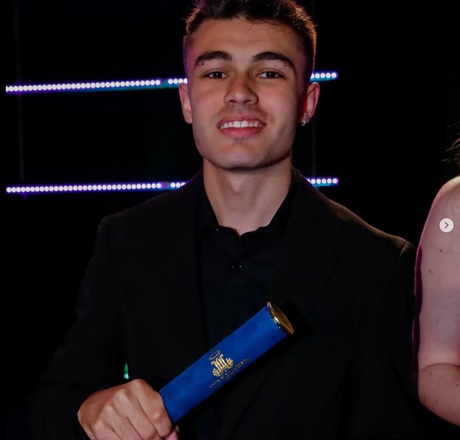
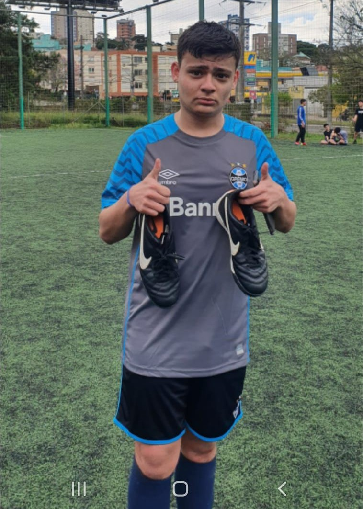
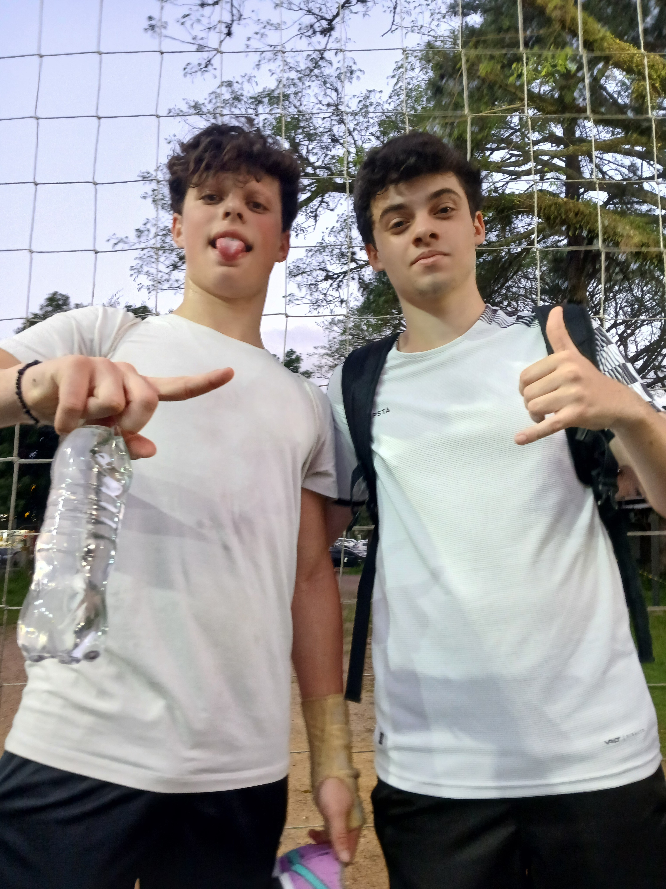
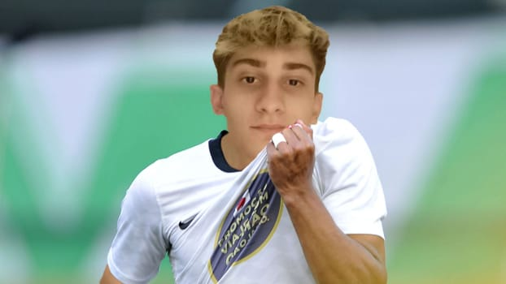

MVPS
-

4° EDIÇÃO - Nêgolas
Uma edição marcada pelo talento e resistência dos jogadores, onde Nêgolas se destacou com sua maestria em campo. Foi uma exibição de força, habilidade e um toque refinado que levou sua equipe à vitória.
-
5ª EDIÇÃO (GreNal Edition) - King Neves
A rivalidade do GreNal fez dessa edição uma batalha épica. King Neves, o senhor da bola, dominou o campo com sua presença e visão de jogo, garantindo o título de MVP.
-

6ª EDIÇÃO (INÉDITA PRÉ RESENHOUMS) - ChicoDur
Antes da lendária resenha, ChicoDur se consolidou como um maestro em campo, conduzindo sua equipe com passes precisos e uma liderança inquestionável.
-

7ª EDIÇÃO - Sant prs (Soldado Doss)
Nesta edição, Sant prs demonstrou uma defesa impenetrável, enquanto Soldado Doss foi o verdadeiro guerreiro da equipe. Um jogo de garra e determinação.
-

8ª EDIÇÃO (PÃO E ÁGUA) - Bepeixoto (🤢)
Em meio a uma batalha dura, Bepeixoto foi o destaque, apesar das dificuldades. Seu empenho em campo foi crucial, mesmo com a ressaca presente no ar.
-

9ª EDIÇÃO (AL MOÇAR) - Brito (Bedrock)
Brito foi sólido como rocha, ganhando o apelido de Bedrock por sua impenetrável defesa e posicionamento tático impecável, levando sua equipe ao topo.
-
9.5ª EDIÇÃO (5v5) - Dudux (✡️)
No clássico 5v5, Dudux brilhou, mostrando habilidade em espaços curtos e fazendo a diferença em uma partida acirrada com jogadas memoráveis.
-

9.9ª EDIÇÃO (VÁRZEA) - Mendes e Lucas T
Em um jogo que encapsulou o espírito da várzea, Mendes e Lucas T foram essenciais, liderando seus times com raça e comprometimento, sem deixar a bola parar.
-

9.95ª EDIÇÃO (quase churras) - Thomé
O "quase churras" trouxe Thomé ao centro das atenções, com jogadas brilhantes e uma performance consistente que garantiu o título de MVP dessa edição festiva.
-

9.9999ª EDIÇÃO (quase quase churras) - Dalbem
Dalbem foi a estrela deste evento, com uma atuação quase perfeita, levando sua equipe à glória enquanto todos esperavam o churrasco que não veio.
-

9.99999999ª EDIÇÃO (quase quase quase churras) - Chies (hand in pocket)
Com uma mão no bolso e o controle total do jogo, Chies mostrou que nem sempre é preciso suar a camisa para ser o melhor em campo.
-
EDIÇÃO X
- Artilheiro: Gabriel Mallet
- CdG (Craque do Jogo): Nicholas
- Melhor Goleiro: Prunzel
- Melhor Defensor: Sant
- MVP: PexistoCorla ⭐ -
Edição 11 (edição chuva preta) - Neves ❄️
Em meio a uma tempestade épica, Neves resistiu ao dilúvio e fez chover talento em campo. Sua frieza e determinação foram a chave para sua atuação como MVP.
-
Edição 12 (febre edition) - Doss (Zagueiro Artilheiro)
Mesmo febril, Doss se transformou em um zagueiro artilheiro, superando todas as expectativas e dominando o jogo com uma performance impressionante.
-

Edição 13 (edição sol ardente): Dudux 🚲
Sob o calor escaldante, Dudux brilhou em uma performance digna de aplausos. Com técnica impecável e um instinto de ataque apurado, ele marcou o gol da vitória com uma bicicleta espetacular. Sua jogada se tornou o momento mais inesquecível do torneio, garantindo o título em grande estilo e deixando todos de boca aberta sob o sol inclemente.